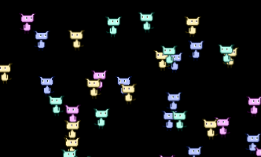

The new OpenFL milestone update brings many changes, and perhaps one of the most important ones is the removal of Tilesheet class and the introduction of its new alternative - Tilemap.
In this tutorial I'll give you a quick overview of this new class and provide an example to render different moving tiles.
This tutorial is a direct follow-up to one of my previous tutorials Fast 2D rendering using Tilesheets in OpenFL, which is now obsolete.
The principle of how Tilemap works is similar to Tilesheet - we provide a tileset atlas, which is a picture containing all the sprites that we need, and slice the tileset into rectangles to extract the required individual tiles from it for rendering.
For this example I'll be using the same 64x64 tileset as before.

I intend to extract 4 tiles from it, all of which coincidentally have the same size - 32x32.
Create a new empty OpenFL project in your favorite IDE or text editor, and start by declaring these members:
private var tilemap:Tilemap;
private var tileset:Tileset;
private var BLUE:Int;
private var PINK:Int;
private var YELLOW:Int;
private var TEAL:Int;
private var characters:Array<Character>;
The constructor comes next. Here I'm doing several things: declaring a Tileset instance and splicing the tileset image into 4 rectangles - 4 characters. The addRect() method creates a tile from the atlas based on the coordinates and size we provide, and returns an integer - ID of the new tile. We should store these IDs in local members - those represent the sprites that we want to render.
After that I declare a new Tilemap, set its size, pass the tileset to it, and add it as a child in order for it to be visible. We'll add an ENTER_FRAME event listener and then a hundred of each character sprite using an addCharacters() function, which I will create shortly.
public function new()
{
super();
tileset = new Tileset(Assets.getBitmapData("img/tileset.png"));
BLUE = tileset.addRect(new Rectangle(0, 0, 32, 32));
PINK = tileset.addRect(new Rectangle(32, 0, 32, 32));
YELLOW = tileset.addRect(new Rectangle(0, 32, 32, 32));
TEAL = tileset.addRect(new Rectangle(32, 32, 32, 32));
tilemap = new Tilemap(stage.stageWidth, stage.stageHeight, tileset);
addChild(tilemap);
stage.addEventListener(Event.ENTER_FRAME, onFrame);
characters = [];
addCharacters(BLUE, 100);
addCharacters(PINK, 100);
addCharacters(YELLOW, 100);
addCharacters(TEAL, 100);
}
Tilemap contains an array of openfl.display.Tile objects, which we can add, sort and remove, and it's these objects that actually represent the sprites we want to render. Let's create a new class Character, which extends Tile.
Tile already contains properties that are responsible for position, scaling and rotation of the sprite. There is also a matrix property which lets us perform complex transformations. All of this means that we don't need to bother with declaring and handling these properties ourselves in our Character class, but we'll add a new property called velocity, which is a 2d vector that will represent the movement speed of the sprite.
package src;
import lime.math.Vector2;
import openfl.display.Tile;
class Character extends Tile
{
public var velocity:Vector2;
public function new(type:Int, x:Float, y:Float, velocityX:Float, velocityY:Float)
{
super(type, x, y);
velocity = new Vector2(velocityX, velocityY);
}
}
Back to our Main class, let's now add the addCharacters() method. This simply creates as many Character objects as needed, randomly positions them on the screen and sets their velocity. It is important to add each character to Tilemap as a tile, and to our previously created array of all characters.
private function addCharacters(type:Int, count:Int){
var i:Int;
for (i in 0...count){
var posX:Float = Math.random() * stage.stageWidth;
var posY:Float = Math.random() * stage.stageHeight;
var velX:Float = Math.random() * 4 - 2;
var velY:Float = Math.random() * 4 - 2;
var char:Character = new Character(type, posX, posY, velY, velX);
tilemap.addTile(char);
characters.push(char);
}
}
Now all that's left is to handle the ENTER_FRAME event and move the objects on the screen based on the velocity. I check if the character has gone offscreen and inverse the velocity if that happens. I also use the scaleX property to flip the image horizontally based on which direction it's moving.
private function onFrame(e:Event){
for (char in characters){
char.x += char.velocity.x;
char.y += char.velocity.y;
if(char.x < 0 && char.velocity.x < 0){
char.velocity.x *= -1;
}else if(char.x > stage.stageWidth && char.velocity.x > 0){
char.velocity.x *= -1;
}
if(char.y < 0 && char.velocity.y < 0){
char.velocity.y *= -1;
}else if(char.y > stage.stageHeight && char.velocity.y > 0){
char.velocity.y *= -1;
}
if(char.velocity.x > 0){
char.scaleX = 1;
}else{
char.scaleX = -1;
}
}
}
This results in 400 sprites moving around like this:
Tilemap acts a bit like a display list, so whenever you need to render a tile - add it using addTile() and remove it using removeTile(). You can use addTileAt() and removeTileAt() to target tiles at the specific position in the array. This can help you control which tiles need to appear on top of others.
You can use this technique to build efficient games that display thousands of sprites at once. If you want to see an example of a game made using OpenFL, check out my game Hypnorain, which is available on Steam.